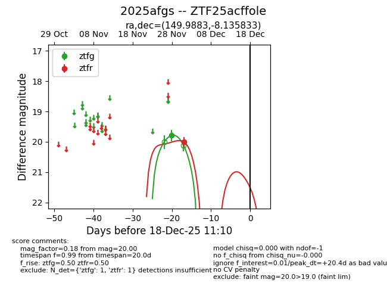
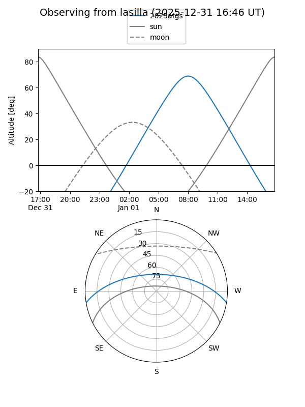
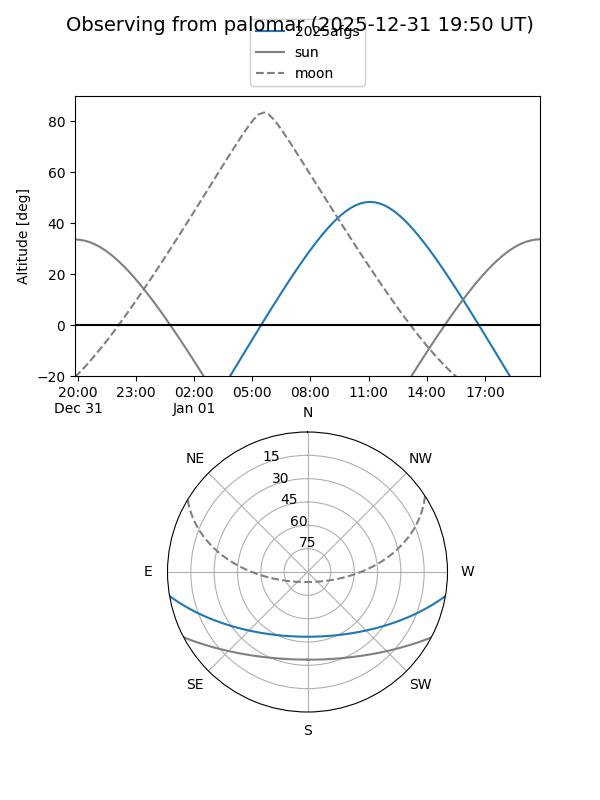
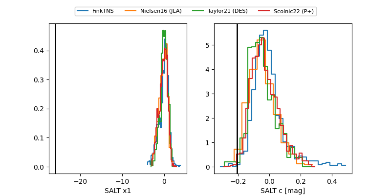

2025afgs
Target 2025afgs at 2025-12-18 11:17
Aliases and brokers:
FINK: fink-portal.org/ZTF25acffole
Lasair: lasair-ztf.lsst.ac.uk/objects/ZTF25acffole
ALeRCE: alerce.online/object/ZTF25acffole
TNS: wis-tns.org/object/2025afgs
YSE: ziggy.ucolick.org/yse/transient_detail/2025afgs
alt names
ZTF25acffole (ztf,fink_ztf)
2025afgs (tns,yse)
Coordinates:
equatorial (ra, dec) = 149.9883,-8.13583
equatorial (HMS+DMS) = 09:59:57.19,-08:08:09.00
galactic (l, b) = (247.0771,+35.53239)
Photometry
last ztfg=19.79, ztfr=20.00
1 ztfg, 1 ztfr detections
Lightcurve

Visibility


Additional plots
